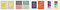
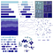
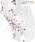

Earlier this month, Susie Lu and I released Viz Palette, a tool to help data visualization designers evaluate and improve their palettes. It shows the palette in use across a variety of data visualization types but also measures the individual colors using techniques that try to identify when colors are too similar to each other visually but also when the names of colors are too alike.
I used to be an academic, so when I first started thinking about color, I read Josef Albers’ Interaction of Color, the seminal work on color from a psychological perspective. I looked to Albers and a few others to help me understand color rather than the more modern cognitive science approach because I didn’t think of color as a technical problem to solve. It involved something else, which at the time I would have chalked up to “aesthetics” but which now I would call design. But I found few rules that I could easily apply to data visualization.

Tools and software libraries constantly appear to finally “solve” the color problem. There are tools to generate palettes, to visualize the color space of your palettes or show palettes in use in images. I made reference to several of these in Color Advice for Data Visualization with D3.js. But rather than solve the problem of understanding color, it seemed like they just became a growing list to be copypasted whenever anyone asked about effective color use. On medium, that copypasta takes the form of The Color Essay and consists of little more than an annotated list of all these tools along with some color wheels and charts showing the spectrum of visible light.
These lists and essays give little material to actively improve your work. They imply that there’s is a function or tool that simply solves the problem and absolves the data visualization designer of responsibility. Any failure is purely technical, rather than a result of design or methods. Each tool champions a new color space or a new technique for measuring distinctiveness, and gets a bunch of retweets or an award at a conference (depending on your measure of success) and then does little more than become another example on that list.
This is typified by Colorgorical, which promises to generate automatically a color palette that is distinctive and effective for data visualization. Colorgorical relies on a technique known as Just Noticeable Difference (JND) which measures whether a color of a particular size should be noticeably different to a particular percent of the population. It combines this with color name distinctness (whether the names of the colors are recognizable and whether they overlap) along with pair-preference to auto-generate palettes. It seems like it should have “solved” palette generation, but in my experience its selected colors so favor green that it invariably comes up with color palettes that can only be described as vomit-inspired. My guess is that its reliance on XKCD’s color names has something to do with it along with green shades being naturally more distinct.
This isn’t meant to single out Colorgorical, which demonstrates some good areas of research that we used in Viz Palette (JND and color naming). Rather, the problem is the entire technological optimist perspective of color as something you don’t have to invest in. Color is just an annoyance and when we find the right tool that solves it for us, we can get on with the real work of data visualization.
That’s because color is intimidating and who wouldn’t want it to just be handled by a well-designed tool? I’ve written about color in both editions of D3.js in Action. Yet, I still felt nervous making authoritative statements about it. I knew the technical and academic aspects of color, the gestalt color interactions and the cultural norms, but it was hard to translate all that signal into practice. On the other hand, even though folks had built great tools like d3-jnd and chroma.js, these seemed little more than expert systems for particular moments in the color process (like wanting to lighten or brighten or interpolate).
The sum total of concrete rules that I knew was:
Don’t use color ramps for quantitative data.
So when we built the Viz Palette we wanted to make sure it was practical without being primitive. That’s why it provides an active view of your palette on a variety of different data types. In that regard Viz Palette resembles other color tools related to data visualization (like Cynthia Brewer’s venerable ColorBrewer or Colorgorical).
Expanding on this approach, Viz Palette doesn’t just show lines and areas, it shows different variations of these graphical primitives that appear in common charts. We call this section Colors in Action. All data visualization is made with lines and filled areas but in practice the shapes created are affected by position, shared borders and other attributes that are best expressed by example.

It’s not enough to know that different colors are effective as areas because there are other factors in visualizations that use areas. Violin charts do not border each other like stacked areas in a stacked chart. The areas in a boxplot or treemap are not like the areas in a bar chart, because they also include lines that affect the color interactions. Similarly, the lines in a line chart are not the same as the lines in a network diagram.
There’s no reliable measure of this gestalt effect and how it enhances or diminishes understanding the data in a chart. We might not have a good technical measure of that effect but we can show it to you. We also give a simple switch to examine how outlining and not outlining your areas and shapes can affect perception. We did this to make sure to show how shape and color interact in data visualization in ways that are unexpected and hard to describe with simple rules. A color palette that doesn’t quite distinguish between colors in a violin plot may actually work fine for stacked area charts because of the effect of color areas bordering each other.
That’s why Viz Palette helps you see color challenges in both a practical and analytical way. To supplement the practical view, the Color Report gives you perception and naming conflicts using the same technical approaches I mentioned above (like JND). Rather than an obscure chart of color space, it highlights color conflicts with an emphasis on whether they are close enough to cause problems as lines or points or areas. For color naming, rather than rely on a questionable list of colors generated via crowdsourcing, the Color Report uses a custom-curated list of color names created by Susie. The XKCD list has “salmon” and “lime green” as color names, no browns, and none of the “light” variations of a color name. It’s focus was on color as hue, apparently, but one reason you see paired palettes as a popular choice in data visualization is that a reader can easily verbally distinguish between the dark orange line and the light orange line in a way that is not so easy to do in distinguishing the salmon-colored node from the orange node.
I’m extremely happy with how well Viz Palette works but for me the real value came in building it. It helped me really understand color practice for data visualization so that I can give a few more rules for color usage in data visualization:
Optimize your palette for your dataset
Don’t use a 20-color palette for a dataset that only has four categories. If you’re intimidated by building color palettes then pick the four most recognizable and easily named and thematically similar colors from your 20 color palette, don’t just use the first four.
Color is Social
Viz Palette doesn’t know what you’re using your colors for. It doesn’t know if you’re trying to put together a sharp palette for a big presentation or a meeting filled with questions or for your exploratory viz in your notebook. If it’s a meeting and you expect other people to talk about your chart, then you should try to have good name distinctiveness. This means that the colors on a chart should be verbally distinguishable such that if an audience member named one of the colored elements there was no chance for confusion. “The red one” should not start a conversation as to whether or not the reference was to the fuchsia datapoint or the dusky rose datapoint or the dark pink datapoint. On the other hand, if it’s your notebook, you should emphasize color distinctness. It does not matter if you cannot name the colors in the chart you are using for exploration, because it’s not collaborative, instead you just need to make sure you can tell the difference between the datapoints effectively. If it’s a big presentation, you should account for color-blindness and also try to maintain some thematic similarity.
High Cardinality Color is Bad
Rather than trying to find that impossible 20-color palette, stop using color when you have so many dimensions. It’s indistinguishable, it’s confusing and you’re just off-loading the complexity and decision-making to your reader. But if you have to, recognize that it’s hard and that it’s going to take time and effort. Point that out to your stakeholders, schedule some time for it, don’t just brush it off. One major reason why people are so bad at color in data visualization is because they don’t budget any time for it.
Make it Pretty
I’ve avoided any mention of aesthetics but it’s the impeccably-dressed elephant in the room. Rather than aiming for beauty, though, focus on color themes, like earth tones, high key, neon, pastel and desaturated. Try to maintain a theme with your colors, otherwise the colors that aren’t in that theme will stand out and signal importance to your readers. This can mean colors with the same level of saturation (muted grayish colors) or the same lightness (pastel) but also neighboring hues on a color wheel (if you have mostly blues and greens and one orange that orange will stand out like it’s special).

Think of Interaction of Color
Gestalt color effects mean that a color palette that works for one chart type may not for another. Some chart types are very resilient (like the stacked area charts) while others are very fragile (all line charts) and that should influence your decision not only of what color to use but what layout to use. Try especially to avoid transparent colors, which should never be used just to lighten (use the solid lighter color you expect) and should rarely be used otherwise. This graduated symbol map of water usage from the New York Times shows unplanned for color interaction between the layered transparent elements creating colors that don’t exist in the legend and also colors that do exist in the legend but don’t accurately convey the data.
Integrate Color, Don’t Just Add It
Color decisions are not separate from other graphical decisions. You can process a dataset and account for its structure in your color strategies. Try to ensure that, if you really need to represent 20 distinct values or you’re constrained by some other terrible choice (like branded colors), the layout is a resilient one. In those situations try harder to make sure colors don’t overlap each other or that regions of the chart are not colored randomly but instead are colored to avoid the most challenging color conflicts.
Color Names are More Important for Collaboration not Exploration
Color naming and other social aspects of data visualization are important. If you have a chart with three distinct greens you’re going to feel pretty dumb when someone says “That green one is important” and the response isn’t constructive but rather “You mean the lightish-tealish green or the darker sea green?” If your organization has used certain colors or palettes to signal particular metrics or thresholds, then account for that in your design. If the chart is meant to be presented to groups with strong cultural associations about color, account for that. There’s no rule for this, red isn’t always bad and green isn’t always good, it depends on the setting.
Use the Tools
There are tools and color spaces that allow for convenient measurement of color traits that can be used to build better palettes, including color-safe palettes and high-performing high-cardinality palettes. Viz Palette is great, but maybe you have a more particular case for color-naming or JND. Understanding libraries like chroma.js are a must for anyone who wants to be effective with data visualization.
Looking Forward
We’re not finished with Viz Palette. After watching people use it and hearing feedback we’ve discussed a few features to add to it that we think would enhance its effectiveness.
- Account for luminance (so you don’t unintentionally have a color in your palette that is much brighter than the rest of your colors).
- Have a compare mode so you can see one palette next to the other.
- Allow the Color Report and Colors in Action to be easily embedded.
More generally, I’d like to see Viz Palette act as an accessible entry point into more advanced but still practically important aspects of color. In my experience the data visualization community is too quick to dismiss color with the old “Color is hard” excuse. Color is hard but so is network visualization, annotation, animating a treemap and making a bubble chart. Making Viz Palette dramatically improved my understanding of color, and your engagement with color will do the same.
Thanks to Susie Lu & rachel binx & Helen Ngo for feedback.